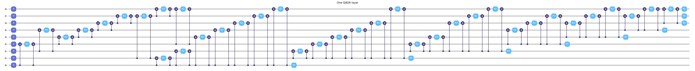
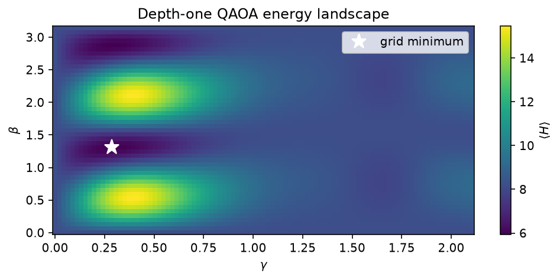
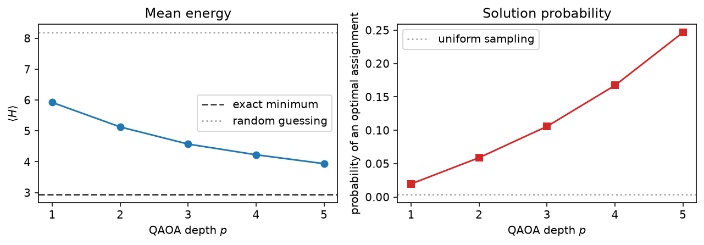
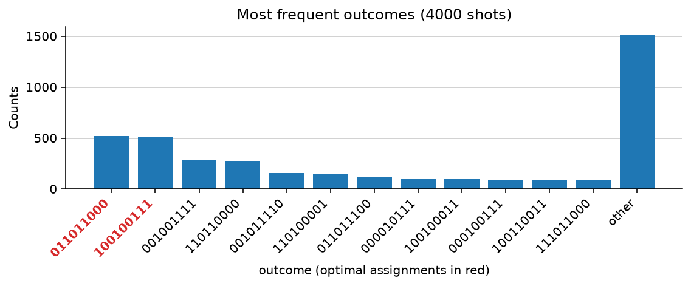

Solve a QUBO with QAOA¶
-
Track
Algorithms
-
Downloads
Most discrete optimization problems that matter in practice — scheduling, routing, partitioning, portfolio selection — can be written as a quadratic unconstrained binary optimization problem:
QUBO is the lingua franca of quantum optimization because the map from \(f\) to a quantum circuit is mechanical, and because the "unconstrained" part is a modeling convention rather than a limitation: a constraint becomes a penalty term that costs energy exactly when it is violated.
This tutorial walks the whole path on a problem small enough to check by hand: splitting a nine-node weighted graph into two balanced halves while keeping two specific nodes apart. The graph is the WSCC 9-bus power network, with edge weights equal to the power flowing on each line, but nothing below uses that reading — it is simply a weighted graph with a partitioning problem on it. Model controlled islanding as a QUBO takes the same network and asks the full engineering question.
Along the way this tutorial establishes the pieces every QUBO application reuses:
- Model. Write the objective and every constraint as one quadratic function of binary variables.
- Map. Substitute \(x_i = (1 - z_i)/2\) to get an Ising Hamiltonian whose ground state is the answer.
- Build. Turn each Ising term into gates: an
RZper field term, aCX-RZ-CXladder per coupling, and anRXmixer. - Evaluate. Get the energy from
fatqat.Estimator, or read the whole outcome distribution from the simulator. - Optimize and read out. Move the angles downhill, then sample and decode.
Everything is seeded, exact where it can be, and runs in a few seconds on a laptop CPU.
The problem, as a QUBO¶
The graph has nine nodes and nine weighted edges. A partition assigns each node to side 0 or side 1, and its cost is the total weight of the edges it cuts. Two requirements come along with it: the two halves must be as equal as nine nodes allow, and nodes 1 and 7 must end up on opposite sides.
One binary variable per node is enough, because with two sides the variable's value is the side. That is worth noticing early: an encoding that cannot represent an invalid assignment needs no penalty to forbid one.
Nine nodes do not divide evenly into two halves, so the balance target is 4.5 and the penalty cannot reach zero. It contributes a constant floor of \(2 \times 0.25\) to every energy, and still prefers a 4/5 split over any other.
import matplotlib.pyplot as plt
import numpy as np
from scipy.optimize import minimize
import fatqat as fq
import fatqat.operations as ops
# The WSCC 9-bus network. Node labels are zero-based, so node 0 is bus 1.
EDGES = [
# (node, node, weight)
(0, 3, 0.8855058426108287),
(2, 5, 1.0506270719315443),
(3, 4, 0.3795071371756076),
(4, 5, 0.7349783693597357),
(5, 6, 0.29891469957856975),
(6, 7, 0.9382048153285490),
(7, 1, 2.0147319144099027),
(7, 8, 1.0706524421112620),
(8, 3, 0.5028157475281494),
]
NODES = sorted({node for i, j, _ in EDGES for node in (i, j)})
N = len(NODES)
SEPARATE = (1, 7) # these two nodes must land on opposite sides
BALANCE_WEIGHT = 1.0
SEPARATE_WEIGHT = 4.0
print(f"{N} nodes, {len(EDGES)} edges, total edge weight {sum(w for *_, w in EDGES):.3f}")
Runtime result
9 nodes, 9 edges, total edge weight 7.876
A QUBO is just three containers: a constant, a vector of linear coefficients, and a dictionary of pair coefficients. Building it by hand keeps the algebra visible, and every term below is one line of the model.
The cut term uses the identity \(x_i + x_j - 2 x_i x_j\), which is 1 when the two endpoints disagree and 0 when they agree. The balance term squares \(\sum_i x_i - N/2\). The separation term is \(1 - (x_i + x_j - 2 x_i x_j)\), which charges the penalty exactly when the two nodes agree.
constant = 0.0
linear = np.zeros(N)
quadratic: dict[tuple[int, int], float] = {}
def add_quadratic(i, j, value):
"""Accumulate a coefficient on the pair (i, j), stored with i < j."""
key = (i, j) if i < j else (j, i)
quadratic[key] = quadratic.get(key, 0.0) + value
# Objective: the weight of every cut edge.
for i, j, weight in EDGES:
linear[i] += weight
linear[j] += weight
add_quadratic(i, j, -2.0 * weight)
# Constraint: equal halves, as (sum_i x_i - N/2)**2 expanded with x*x = x.
target = N / 2
constant += BALANCE_WEIGHT * target**2
for i in NODES:
linear[i] += BALANCE_WEIGHT * (1.0 - 2.0 * target)
for i in NODES:
for j in NODES:
if i < j:
add_quadratic(i, j, 2.0 * BALANCE_WEIGHT)
# Constraint: nodes 0 and 5 on opposite sides.
first, second = SEPARATE
constant += SEPARATE_WEIGHT
linear[first] -= SEPARATE_WEIGHT
linear[second] -= SEPARATE_WEIGHT
add_quadratic(first, second, 2.0 * SEPARATE_WEIGHT)
print(f"constant {constant:.3f}")
print(f"linear {np.round(linear, 3)}")
print(f"{len(quadratic)} pair terms")
Runtime result
constant 24.250
linear [-7.114 -9.985 -6.949 -6.232 -6.886 -5.915 -6.763 -7.976 -6.427]
36 pair terms
With nine variables there are only 512 assignments, so the exact answer is one enumeration away. Every later result is measured against it.
The enumeration also fixes a convention that matters everywhere else: row \(k\) is the binary expansion of \(k\) with variable 0 in the most significant position. That is exactly how FatQat orders a counts string and a statevector index, so the same array serves as the cost of each measurement outcome without any reindexing.
codes = np.arange(1 << N)
bits = ((codes[:, None] >> np.arange(N - 1, -1, -1)[None, :]) & 1).astype(float)
spectrum = np.full(1 << N, constant)
spectrum += bits @ linear
for (i, j), value in quadratic.items():
spectrum += value * bits[:, i] * bits[:, j]
optimal_indices = np.flatnonzero(np.isclose(spectrum, spectrum.min()))
uniform_probability = optimal_indices.size / spectrum.size
print(f"minimum energy {spectrum.min():.4f}")
for index in optimal_indices:
assignment = format(index, f"0{N}b")
side_one = [node for node in NODES if assignment[node] == "1"]
side_zero = [node for node in NODES if assignment[node] == "0"]
print(f" {assignment} side 0 = {side_zero}, side 1 = {side_one}")
print(f"{optimal_indices.size} optimal assignments out of {spectrum.size}")
print(f"a uniform sampler finds one with probability {uniform_probability:.4f}")
Runtime result
minimum energy 2.9432
011011000 side 0 = [0, 3, 6, 7, 8], side 1 = [1, 2, 4, 5]
100100111 side 0 = [1, 2, 4, 5], side 1 = [0, 3, 6, 7, 8]
2 optimal assignments out of 512
a uniform sampler finds one with probability 0.0039
Two optimal assignments, not one: relabeling the two sides gives back the same partition. That symmetry stays with us — it will show up again as an exactly zero magnetic field in the Ising model, and as two equally tall bars in the final histogram.
From binary variables to a Hamiltonian¶
QAOA works with spins, not bits. Substituting \(x_i = (1 - z_i)/2\) with \(z_i = \pm 1\) turns the QUBO into
and the value of \(H\) on a spin string equals the value of \(f\) on the corresponding bit string. The convention \(z = +1\) for \(x = 0\) means the spin string reads directly off a measurement: qubit measured 0 is spin \(+1\).
Working out the substitution term by term gives the coefficients below. The offset collects everything constant; it shifts every energy equally, so it never reaches a gate, but it must be added back before an energy is reported.
offset = constant + linear.sum() / 2 + sum(quadratic.values()) / 4
field = -linear / 2
for (i, j), value in quadratic.items():
field[i] -= value / 4
field[j] -= value / 4
coupling = {key: value / 4 for key, value in quadratic.items()}
# Summing many penalty terms leaves rounding residue where a coefficient should
# cancel exactly. Dropping it keeps those non-terms from becoming gates.
TOLERANCE = 1e-12
field[np.abs(field) <= TOLERANCE] = 0.0
coupling = {key: value for key, value in coupling.items() if abs(value) > TOLERANCE}
spins = 1 - 2 * bits
ising_energies = np.full(1 << N, offset) + spins @ field
for (i, j), value in coupling.items():
ising_energies += value * spins[:, i] * spins[:, j]
print(f"offset {offset:.4f}")
print(f"field {np.round(field, 12)}")
print(f"{len(coupling)} couplings, largest |J| = {max(abs(v) for v in coupling.values()):.4f}")
print(f"max |QUBO - Ising| over all {spectrum.size} assignments: "
f"{np.abs(spectrum - ising_energies).max():.2e}")
Runtime result
offset 8.1880
field [0. 0. 0. 0. 0. 0. 0. 0. 0.]
36 couplings, largest |J| = 1.4926
max |QUBO - Ising| over all 512 assignments: 1.15e-14
The field is identically zero. That is the side-relabeling symmetry again: the problem cannot prefer \(z\) over \(-z\), so no single-spin term survives, and the whole Hamiltonian lives in the couplings. Nothing in what follows depends on that, but it is a useful check that the model says what it was meant to say.
The QAOA program¶
QAOA prepares the equal superposition, then alternates two evolutions \(p\) times: a phase separator \(e^{-i\gamma H}\) that stamps a phase proportional to each assignment's cost, and a mixer \(e^{-i\beta \sum_i X_i}\) that moves amplitude between assignments.
Both pieces are elementary gates. FatQat's RZ(theta) is
\(\mathrm{diag}(e^{-i\theta/2}, e^{+i\theta/2})\), so a field term needs
RZ(2*gamma*h). A coupling term is the same rotation conjugated by a CX
pair, which writes the parity of the two qubits onto the target before rotating
it. The mixer is RX(2*beta) on every qubit.
Program qubit \(i\) is variable \(i\), and FatQat keeps qubit 0 leftmost in a counts string and most significant in a statevector index — the same order the enumeration above already uses.
def qaoa_program(betas, gammas, *, measure=False):
"""Build the QAOA program for this problem at the given angles."""
program = fq.Program(N, N if measure else 0)
for qubit in range(N):
program.add(ops.H, qubit)
for beta, gamma in zip(betas, gammas):
for qubit, value in enumerate(field):
if value != 0.0:
program.add(ops.RZ(2.0 * gamma * value), qubit)
for (i, j), value in coupling.items():
program.add(ops.CX, (i, j))
program.add(ops.RZ(2.0 * gamma * value), j)
program.add(ops.CX, (i, j))
for qubit in range(N):
program.add(ops.RX(2.0 * beta), qubit)
if measure:
program.measure_all()
return program
demo = qaoa_program([0.4], [0.15])
# Draw onto an axis this cell created, so the figure belongs to pyplot.
figure, axis = plt.subplots(figsize=(11.0, 3.4))
demo.draw(ax=axis)
axis.set_title("One QAOA layer")
figure.tight_layout()
print(f"depth-one program: {N} qubits, {len(coupling)} couplings, "
f"{2 * len(coupling)} two-qubit gates per layer")
Runtime result
depth-one program: 9 qubits, 36 couplings, 72 two-qubit gates per layer

A parameter cannot be scaled inside a gate argument — FatQat gate angles take a
number or a bare fatqat.Parameter, not an expression — and every phase
rotation here needs \(\gamma\) multiplied by its own coupling. The program is
therefore rebuilt for each set of angles, which costs about a millisecond and
disappears next to the simulation.
Two ways to get the energy¶
The quantity to minimize is \(\langle \psi(\beta,\gamma) | H | \psi(\beta,\gamma) \rangle\). FatQat offers two routes to it, and they are worth comparing once before trusting either.
fatqat.Estimator takes the Hamiltonian as an Observable and returns the
expectation directly. Observable.from_sparse names only the non-identity
factors of each term, which suits a Hamiltonian with many two-body terms, and
the identity term carries the offset.
The second route exploits a property specific to QUBO: \(H\) is diagonal, so its expectation is just the cost of each outcome averaged over the output distribution. One statevector, one dot product against the spectrum computed earlier — and it is exact, cheaper, and gives the whole distribution rather than only its mean.
terms = [("I", (0,), offset)]
terms += [("Z", (index,), value) for index, value in enumerate(field) if value != 0.0]
terms += [("ZZ", (i, j), value) for (i, j), value in coupling.items()]
hamiltonian = fq.Observable.from_sparse(terms, num_qubits=N)
simulator = fq.simulator.Simulator(method="statevector")
estimator = fq.Estimator(simulator)
def probabilities(betas, gammas):
"""Return the exact output distribution over the 2**N bitstrings."""
result = simulator.run(
qaoa_program(betas, gammas), shots=1, result_config={"final_state": True}
).result()
return np.abs(result.get_statevector()) ** 2
def energy(betas, gammas):
"""Return the exact mean energy, contracted against the cost spectrum."""
return float(probabilities(betas, gammas) @ spectrum)
test_betas, test_gammas = [0.4], [0.15]
from_estimator = float(
estimator.run(qaoa_program(test_betas, test_gammas), hamiltonian).result().get_expectation()
)
from_spectrum = energy(test_betas, test_gammas)
print(f"estimator {from_estimator:.10f}")
print(f"distribution contract {from_spectrum:.10f}")
print(f"difference {abs(from_estimator - from_spectrum):.2e}")
Runtime result
estimator 11.5957077247
distribution contract 11.5957077247
difference 1.42e-14
The two agree to machine precision, which confirms the observable, the gate construction, and the bit ordering all at once. From here on the distribution route is used, because it also reports how much probability sits on the optimum — the number that actually decides whether a run succeeded.
The depth-one landscape¶
At \(p = 1\) there are only two angles, so the entire landscape can be drawn. This is the cheapest way to learn the scale a problem wants: \(\gamma\) enters the circuit multiplied by a coupling, so a Hamiltonian with large couplings has its structure squeezed into small \(\gamma\), and an optimizer started on the wrong scale will wander over featureless terrain.
gamma_scale = max(abs(value) for value in coupling.values())
beta_grid = np.linspace(0.0, np.pi, 49)
gamma_grid = np.linspace(0.0, np.pi / gamma_scale, 97)
landscape = np.array([[energy([b], [g]) for g in gamma_grid] for b in beta_grid])
row, column = np.unravel_index(np.argmin(landscape), landscape.shape)
grid_best = (beta_grid[row], gamma_grid[column])
figure, axis = plt.subplots(figsize=(7.0, 3.4))
mesh = axis.pcolormesh(gamma_grid, beta_grid, landscape, shading="auto", cmap="viridis")
axis.plot(*grid_best[::-1], "w*", markersize=13, label="grid minimum")
axis.set_xlabel(r"$\gamma$")
axis.set_ylabel(r"$\beta$")
axis.set_title("Depth-one QAOA energy landscape")
axis.legend(loc="upper right")
figure.colorbar(mesh, ax=axis, label=r"$\langle H \rangle$")
figure.tight_layout()
print(f"largest coupling |J| = {gamma_scale:.3f}, so gamma is scanned over [0, {np.pi / gamma_scale:.3f})")
print(f"grid minimum {landscape.min():.4f} at beta={grid_best[0]:.3f}, gamma={grid_best[1]:.3f}")
print(f"random-guess average {landscape.mean():.4f}, exact minimum {spectrum.min():.4f}")
Runtime result
largest coupling |J| = 1.493, so gamma is scanned over [0, 2.105)
grid minimum 5.9237 at beta=1.309, gamma=0.285
random-guess average 8.9654, exact minimum 2.9432

The landscape is smooth and periodic in \(\beta\) with period \(\pi\), and its structure in \(\gamma\) repeats on the scale set by the couplings. The minimum is a broad basin, which is why a gradient-free optimizer started anywhere sensible finds it.
Optimizing, one layer at a time¶
Depth is what makes QAOA work: as \(p\) grows the ansatz can concentrate more amplitude on low-energy assignments. The angles at depth \(p\), however, are hard to find from a cold start, because the landscape grows a local minimum for roughly every new dimension.
The standard remedy is to grow the depth: solve \(p = 1\) from several random starts, then seed \(p = 2\) from that solution, and so on. Two seeds are worth trying at each step. Repeating the last layer's angles usually reaches a deeper basin, while setting the new layer's angles to zero makes it the identity, so the deeper ansatz begins exactly at the shallower optimum and cannot do worse. Taking the better of the two — plus a couple of perturbed variants — keeps the curve monotone without an expensive global search at every depth.
COBYLA suits the inner loop because it needs no gradient, which matters as soon as the energy comes from finite sampling rather than exact simulation.
rng = np.random.default_rng(2024)
depths = [1, 2, 3, 4, 5]
mean_energies, optimum_probabilities = [], []
betas = gammas = None
for depth in depths:
def objective(parameters, depth=depth):
return energy(parameters[:depth], parameters[depth:])
if betas is None:
# Cold start: random guesses on the scales the landscape showed.
starts = [
np.concatenate(
[rng.uniform(0, np.pi, depth), rng.uniform(0, np.pi / gamma_scale, depth)]
)
for _ in range(8)
]
else:
starts = [
# Repeat the last layer, which usually lands in a deeper basin.
np.concatenate([betas, betas[-1:], gammas, gammas[-1:]]),
# Make the new layer the identity, so this depth starts exactly at
# the previous optimum and can never do worse.
np.concatenate([betas, [0.0], gammas, [0.0]]),
]
starts += [
np.concatenate(
[betas, rng.uniform(0, np.pi, 1), gammas, rng.uniform(0, np.pi / gamma_scale, 1)]
)
for _ in range(2)
]
best = min(
(
minimize(
objective,
start,
method="COBYLA",
options={"maxiter": 120, "rhobeg": np.pi / (4 * gamma_scale), "tol": 1e-8},
)
for start in starts
),
key=lambda outcome: outcome.fun,
)
betas, gammas = best.x[:depth], best.x[depth:]
distribution = probabilities(betas, gammas)
mean_energies.append(float(best.fun))
optimum_probabilities.append(float(distribution[optimal_indices].sum()))
print(
f"p={depth}: mean energy {mean_energies[-1]:7.4f} "
f"P(optimal) {optimum_probabilities[-1]:.4f} "
f"{optimum_probabilities[-1] / uniform_probability:5.1f}x uniform"
)
print(f"exact minimum {spectrum.min():.4f}")
Runtime result
p=1: mean energy 5.9219 P(optimal) 0.0196 5.0x uniform
p=2: mean energy 5.1285 P(optimal) 0.0589 15.1x uniform
p=3: mean energy 4.5730 P(optimal) 0.1058 27.1x uniform
p=4: mean energy 4.2270 P(optimal) 0.1672 42.8x uniform
p=5: mean energy 3.9384 P(optimal) 0.2465 63.1x uniform
exact minimum 2.9432
Both numbers improve with every layer, and they measure different things. The mean energy is what the optimizer sees; it falls toward the exact minimum but never reaches it, because the state stays a superposition over many assignments. The probability of measuring an optimal assignment is what actually matters for solving the problem, and it is the number to quote.
figure, (left, right) = plt.subplots(1, 2, figsize=(9.0, 3.2))
left.plot(depths, mean_energies, "o-", color="#1f77b4")
left.axhline(spectrum.min(), color="#444444", linestyle="--", label="exact minimum")
left.axhline(spectrum.mean(), color="#aaaaaa", linestyle=":", label="random guessing")
left.set_xlabel("QAOA depth $p$")
left.set_ylabel(r"$\langle H \rangle$")
left.set_title("Mean energy")
left.set_xticks(depths)
left.legend()
right.plot(depths, optimum_probabilities, "s-", color="#d62728")
right.axhline(uniform_probability, color="#aaaaaa", linestyle=":", label="uniform sampling")
right.set_xlabel("QAOA depth $p$")
right.set_ylabel("probability of an optimal assignment")
right.set_title("Solution probability")
right.set_xticks(depths)
right.legend()
figure.tight_layout()
Runtime result

Reading the answer out¶
A QAOA circuit is a sampler, not an oracle: it returns a distribution in which good assignments are over-represented. The practical procedure is to measure a few thousand shots, evaluate the true objective on each distinct outcome, and keep the best. Evaluating the objective is classical and cheap, so a run succeeds as soon as one shot lands on a good assignment — a far weaker requirement than the mean energy reaching the minimum.
SHOTS = 4000
measured = simulator.run(
qaoa_program(betas, gammas, measure=True),
shots=SHOTS,
simulation_config={"seed": 11},
).result()
counts = measured.get_counts()
ranked = sorted(counts.items(), key=lambda item: spectrum[int(item[0], 2)])
print(f"{len(counts)} distinct outcomes in {SHOTS} shots")
print("best outcomes by true objective value:")
for assignment, shots in ranked[:4]:
side_one = [node for node in NODES if assignment[node] == "1"]
cut = sum(w for i, j, w in EDGES if (assignment[i] == "1") != (assignment[j] == "1"))
print(
f" {assignment} energy {spectrum[int(assignment, 2)]:7.4f} "
f"cut weight {cut:.2f} side 1 = {side_one} ({shots} shots)"
)
best_assignment = ranked[0][0]
print(f"\nbest sampled energy {spectrum[int(best_assignment, 2)]:.4f}, "
f"exact minimum {spectrum.min():.4f}")
Runtime result
184 distinct outcomes in 4000 shots
best outcomes by true objective value:
100100111 energy 2.9432 cut weight 2.69 side 1 = [0, 3, 6, 7, 8] (515 shots)
011011000 energy 2.9432 cut weight 2.69 side 1 = [1, 2, 4, 5] (519 shots)
001001111 energy 3.5025 cut weight 3.25 side 1 = [2, 5, 6, 7, 8] (285 shots)
110110000 energy 3.5025 cut weight 3.25 side 1 = [0, 1, 3, 4] (279 shots)
best sampled energy 2.9432, exact minimum 2.9432
figure, axis = plt.subplots(figsize=(8.0, 3.4))
measured.draw(
number_to_keep=12,
sort="count",
ax=axis,
title=f"Most frequent outcomes ({SHOTS} shots)",
)
optimal_strings = {format(index, f"0{N}b") for index in optimal_indices}
for label in axis.get_xticklabels():
if label.get_text() in optimal_strings:
label.set_color("#d62728")
label.set_fontweight("bold")
axis.set_xlabel("outcome (optimal assignments in red)")
figure.tight_layout()
Runtime result

The two optimal assignments are among the most frequent outcomes, and they are each other's bitwise complement — the side-relabeling symmetry, surviving all the way from the Hamiltonian's zero field to the measured histogram.
What carries over¶
Nothing above was specific to graph partitioning. The QUBO containers, the
substitution to spins, the phase-separator and mixer construction, the two ways
of getting an energy, the depth-growing optimizer, and the sample-and-decode
readout are the same for any QUBO. Applying them to a new problem means writing
one function: the one that turns the application's objective and constraints
into constant, linear, and quadratic.
Three lessons generalize with them:
- The encoding is the first optimization. Choosing one variable per node rather than one per node-and-side halved the qubit count and removed a penalty term, before any quantum work happened.
- Penalty weights must dominate what they forbid. A violation has to cost more than the objective improvement it could buy, or the ground state will simply be infeasible.
- Not every constraint belongs in the QUBO. Requirements that are awkward to write quadratically are often cheaper to check classically after measurement, since decoding is free compared with the circuit.
Model controlled islanding as a QUBO puts all three to work on a real application, where the choice of encoding decides whether the problem fits on the hardware at all, and Split a power grid into islands with QAOA runs it.